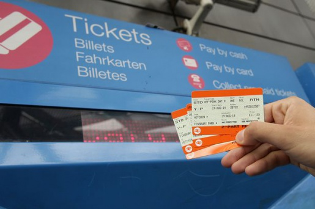
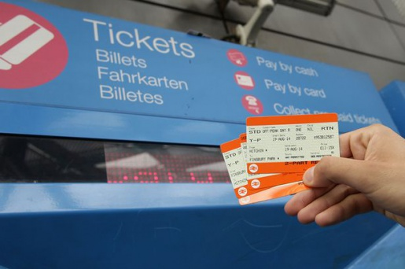

Great Dividing Rail
 

| TRAIN TICKETS | ADULT | SENIORS/CONCESSION/UNDER18 | FAMILY | ||
|---|---|---|---|---|---|
| EAST COAST AUSTRALIA | STANDARD | FIRST CLASS | STANDARD | FIRST CLASS | BOTH CLASSES |
| ONE TRIP | 80 | 160 | 56 | 98 | 20% OFF |
| TWO TRIPS | 140 | 220 | 112 | 154 | 20% OFF |
| THREE TRIPS | 210 | 270 | 147 | 189 | 20% OFF |
| FOUR TRIPS | 270 | 330 | 187 | 231 | 20% OFF |
| FIVE TRIPS | 310 | 370 | 217 | 259 | 20% OFF |
| CENTRAL/WEST COAST AUSTRALIA | STANDARD | FIRST CLASS | STANDARD | FIRST CLASS | BOTH CLASSES |
| ONE TRIP | 160 | 260 | 112 | 182 | 20% OFF |
| TWO TRIPS | 300 | 400 | 210 | 280 | 20% OFF |
| THREE TRIPS | 400 | 500 | 280 | 350 | 20% OFF |
Our Products
At Great Dividing Rail we offer a range of services so that your experience with us is one of a life time. We have the only rail in Australia that been custom designed to take in the spectacular scenery that this vast country has to offer, as well as, uniquely built carriages so that an individual experience can be had.
Ticketing at the Great Dividing Rail is also a uniquely service, we offer two main categories of class Standard and First Class, in both categories we have three different pricings, Adult, Seniors/Concession and Under 18, and a special family package were a further 20% discount is applied on the total cost.
We also offer special pricing to how we calculate journeys, our journeys are labelled as TRIPS and you purchase the total number of single TRIPS you will make. For e.g., if you wish to travel from Melbourne to Canberra that is only one single TRIP (meaning no stops in between), and if you intend to return to Melbourne you would purchase a TWO TRIPS ticket, giving you a 25% discount on your second ticket. This discount also becomes greater the more tickets you buy, giving you greater value for money.
Destinations
- Melbourne
- Canberra
- Sydney
- Newcastle
- Byron Bay
- Brisbane
- Darwin
- Alice Springs
- Perth
- Adelaide
- Mildura
Services Available
- Food&Beverages
- Free Wi-Fi Internet
- Activities for Kids
- Things to See&Do at your next destination